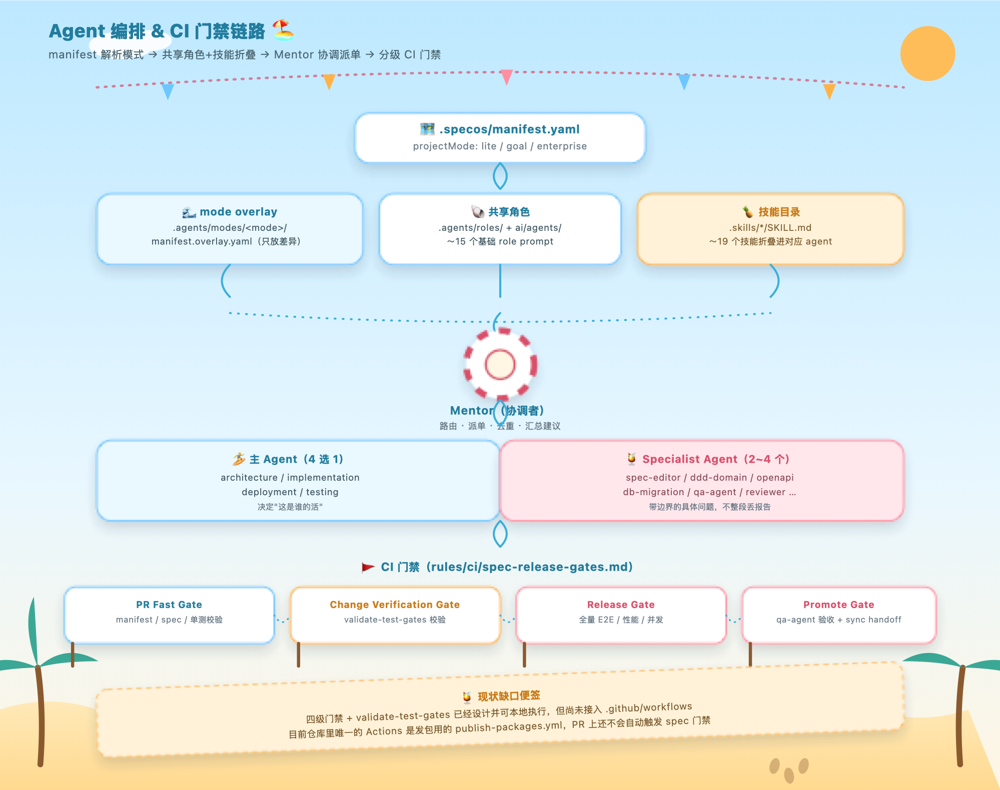

前两篇讲了我为什么设计三档 spec （ LiteSpec / GoalSpec / EnterpriseSpec ），以及什么信号提示该升级。这篇讲背后真正干活的那部分——一套 agent 是怎么同时服务三档不同项目的。
三档 spec 定下来之后，我干了一件现在想起来挺蠢的事：给每一档都单独写了一份 agent 说明书。 LiteSpec 一份， GoalSpec 一份， EnterpriseSpec 一份，每份都写清楚遇到这类活该找谁、这个角色该干什么、不该干什么。
维护了没两周就绷不住了。三份说明书里"架构相关的活该找谁、实现相关的活该找谁"这些内容几乎一模一样，差的就那么几句话。改一处，另外两处忘了同步， agent 用的是过时的说明书，干出来的活跟我预期对不上，排查了半天才发现问题出在说明书本身没同步——不是 agent 变笨了。
把三份说明书摊开来比对了一下才发现，真正因为档位不同而不一样的内容，可能连三成都不到。剩下七成——谁负责架构判断、谁负责写代码、谁负责部署、谁负责验收——这套分工在三档里根本没变过，只是 EnterpriseSpec 那档要求这些角色多留一份证据、多走一道审查。
那就没必要写三份，该拆成一套共享的骨架，加上每档只写差异部分。这思路其实跟三档设计是一脉相承的：三档不是三套互相独立的东西，是同一套底子上叠加的治理强度， agent 的组织方式也该照这个逻辑来，不然就是自己打自己脸。
共享层就四个主 agent ，分工很直白： architecture-agent 管架构判断和 spec 影响面，判断一个改动会不会波及别的模块； implementation-agent 管具体实现，写代码接需求； deployment-agent 管部署、 CI 、发布就绪； testing-agent 管独立验证和验收，专门唱反调找问题。这四个之外还有一批更细分的 specialist ，专门管 spec 规范化的、管数据库迁移的、管接口契约的、管 UI 设计的、管端到端场景测试的、管性能和并发证据的，但它们不直接对外接活，都是由上面四个主 agent 视情况拉进来帮忙。
这个设计也是踩坑踩出来的。一开始我图省事，想把所有能力都塞进一个"全能 agent"，结果这 agent 的说明书越写越长，每次给出的答案都夹一堆不相关的考虑，反而没有专精 agent 的结论利落。后来干脆拆开，一个角色只认领一件事，跨界了就显式拉另一个角色进来，别让一个 agent 硬撑所有场景。
每一档要用的时候，只需要在共享骨架上叠一层"这档特有的补充说明"，不用把整份说明书重写一遍，谁都不用再手抄一遍别人已经写好的分工。
光有分工还不够，还得有人负责派单，不然照样是各干各的，谁都不知道该找谁。这个角色我内部叫它 Mentor。

Mentor 自己不下场干活，就做几件事：接收 request 、判断这活儿归谁管、把边界不清楚的部分拆成两三个小任务分给对应的 specialist 、等大家都回话了再把结果合并、顺手把重复和不靠谱的结论过滤掉，最后只吐出一条能直接执行的建议——而不是把每个 specialist 的原始报告全部拼在一起甩给我。
举个具体点的场景。假如我扔给它一句"这个接口改了字段类型，帮我看看有没有影响"，Mentor 会先判断这属于架构判断的活，把 architecture-agent 定为主责方；架构判断如果发现这个字段被数据库和接口文档两头引用，会再拉 db-migration-agent 和 openapi-agent 各自出一份简短结论；最后把这两份结论和主责方的判断合并，过滤掉重复的部分，给我一条"这个改动会影响哪些地方、建议怎么处理"的建议——不是三份各说各话的报告堆在我面前让我自己拼。
我自己试下来最有感觉的一点是，以前是我自己在几份 agent 报告里大海捞针，现在这活儿挪到了 Mentor 身上。
现在改一处分工逻辑，只用改共享层那一份，三档自动同步。真正需要单独维护的，只剩每档那一点点差异——这才是我觉得真正省下来的地方，不是"少写了几份文档"，是"以后不用再祈祷自己没漏改哪一处"。
这套规则要是没有别的东西卡着，早晚也会跟 spec 一样慢慢烂掉——这个下一篇细说。